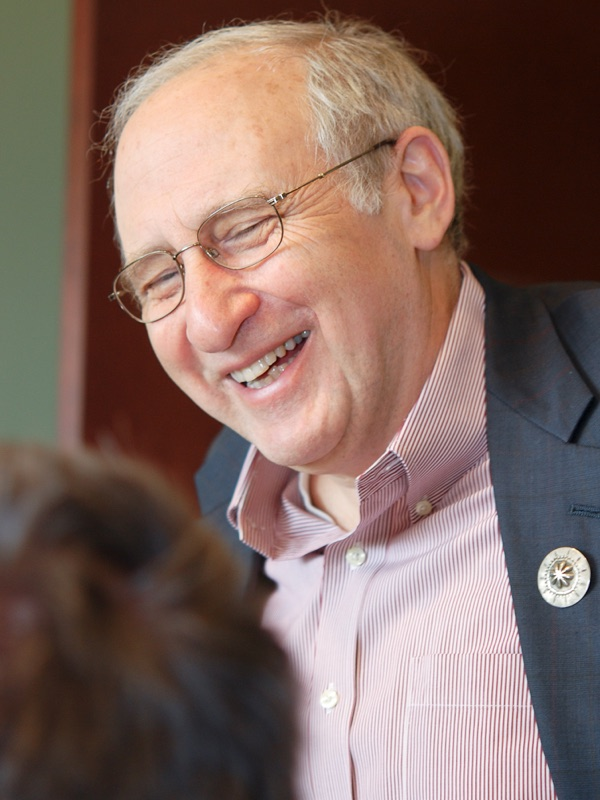

Kein Spaghetti-Code
Es gibt keine Pfeile, also auch keine wilden Sprünge. Jeder Block hat genau einen Eingang und einen Ausgang. Genau das verlangt die strukturierte Programmierung.
Angeberwissen mit Ludwig
Ich bin Ludwig, der Geißbock von VisuStruct. Meinen Namen habe ich von der Ludwig-Geißler-Schule in Hanau. Hier erzähle ich dir, wer das Struktogramm erfunden hat, warum es erst niemand drucken wollte und was die beiden Erfinder danach gebaut haben. Alles mit Quelle, damit du im Unterricht richtig angeben kannst.
Die Geschichte
Ben Shneiderman war Doktorand an der Stony Brook University bei New York. In einem Vortrag über strukturierte Programmierung dachte er: Wenn man auf GOTO verzichten soll, warum dann nicht auch auf die Pfeile im Flussdiagramm? Nach etwa 15 Minuten Skizzieren standen Sequenz, Verzweigung und Schleife auf dem Papier.
Quelle: Shneiderman, A short history of structured flowcharts
Zurück an der Uni half ihm sein Mitdoktorand Isaac „Ike“ Nassi, der sich besonders gut mit strukturierter Programmierung auskannte. Deshalb heißt das Diagramm nach beiden: Nassi-Shneiderman-Diagramm.
Quelle: Shneiderman, A short history of structured flowcharts
Die Fachzeitschrift Communications of the ACM lehnte den Artikel schnell ab. Laut Nassi meinte der Gutachter sogar, sie sollten alle Exemplare einsammeln und verbrennen. Also erschien er im August 1973 in den ACM SIGPLAN Notices, einem Heft ohne Gutachter. Heute wird der Artikel tausendfach zitiert.
Quellen: Nassi & Shneiderman, Flowchart techniques for structured programming, SIGPLAN Notices 8(8), 1973, S. 12–26 · Oral History of Ike Nassi, Computer History Museum, 2016
Bei uns heißen die Diagramme Struktogramme. Seit November 1985 sind sie in der Norm DIN 66261 festgelegt. Deshalb tauchen sie bis heute in deutschen Lehrbüchern und im Informatikunterricht auf.
Es heißt Shneiderman, ohne c. Shneiderman selbst weist darauf hin, dass sein Name in vielen Quellen falsch geschrieben wird. Wer das weiß, darf ein bisschen angeben.
Quelle: Shneiderman, A short history of structured flowcharts
Laut Shneiderman wurden die Diagramme unter anderem bei IBM, Siemens, Bell Labs, AT&T, GE und der US Navy eingesetzt. Microsoft Visio und viele andere Programme bringen Vorlagen dafür mit.
Quelle: Shneiderman, A short history of structured flowcharts
Warum das so clever ist
Ludwig fasst zusammen, warum die Idee von 1972 bis heute im Unterricht steckt.
Es gibt keine Pfeile, also auch keine wilden Sprünge. Jeder Block hat genau einen Eingang und einen Ausgang. Genau das verlangt die strukturierte Programmierung.
Eine Schleife in einer Verzweigung sieht man sofort, weil die Blöcke ineinander liegen. Wo ein Block endet, sieht man an seinem Rand.
Ein Struktogramm lässt sich in Java, Python oder JavaScript übersetzen. Du denkst zuerst über den Ablauf nach und erst danach über die Syntax.
Die Erfinder

Quellen: Shneiderman, About · Wikipedia: Ben Shneiderman · Mozilla: Why are hyperlinks blue?
Quellen: nassi.com · Wikipedia: Ike Nassi
Aus dem Leben der beiden
Nassi lernte seine Frau im Rechenzentrum kennen. Ein Date am Samstagabend hieß damals: Sie stanzte seine Lochkarten. Sie erzählt das laut Nassi bis heute.
Quelle: Oral History of Ike Nassi, Computer History Museum, 2016
Als Nassi 1966 nach Stony Brook kam, war der Campus noch eine Baustelle. Nassi sagt: Es war alles Schlamm. Trotzdem galt die Uni als „Berkeley des Ostens“. Er fing mit Biologie an und wechselte nach dem ersten Jahr zur Mathematik.
Quelle: Oral History of Ike Nassi, Computer History Museum, 2016
Damit Shneiderman ein Jahr ganz an der Uni verbringen konnte, gab er seine Stelle als Lehrer an einem College auf. Den Kurs in numerischer Mathematik, den er dort unterrichtet hatte, übernahm Nassi.
Quelle: Oral History of Ike Nassi, Computer History Museum, 2016
Kurz vor Nassis Doktorprüfung bewies jemand anderes genau seinen Satz, eine Woche vorher. Seitdem hieß es im Institut im Spaß: Pass auf, dass du nicht „geiked“ wirst. Nassi bestand trotzdem, musste aber noch mehr Arbeit nachlegen.
Quelle: Oral History of Ike Nassi, Computer History Museum, 2016
Jahre später wurde Shneiderman nach Stony Brook eingeladen, um eine Festrede zu halten. Sein Thema laut Nassi: die vernichtende Ablehnung von damals. Die Botschaft: einfach weitermachen. 2015 bekam er von Stony Brook sogar die Ehrendoktorwürde.
Quellen: Oral History of Ike Nassi · Shneiderman, About
Shneidermans Vater S. L. Shneiderman war Journalist und berichtete 1936 bis 1938 aus dem Spanischen Bürgerkrieg. Sein Onkel David Seymour, genannt „Chim“, war Fotograf und Mitgründer der berühmten Fotoagentur Magnum. Auch Ben fotografiert: Von ihm stammen Tausende Fotos von Informatik-Konferenzen und Porträts von Pionieren der Informatik.
Quellen: Wikipedia: S. L. Shneiderman · Shneiderman, About
Bau dein erstes Struktogramm und lass es Schritt für Schritt ablaufen. Ludwig drückt die Daumen. Oder die Hufe.
VisuStruct öffnen.jpg){kind=link}
.jpg){kind=link}